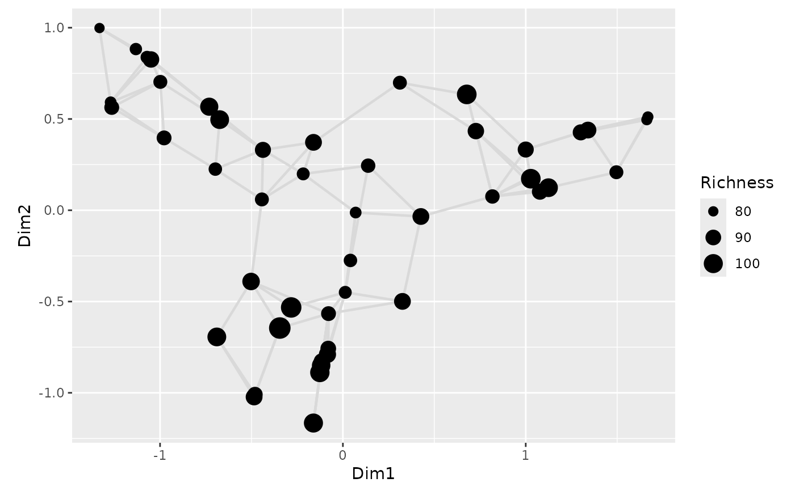

Fortify isometric feature mapping results
fortify.isomap.RdPrepares fortified versions of results from vegan::isomap()
objects.
Arguments
- model, x
an object of class
vegan::isomap().- data
data.frame; additional data to be added to the fortified object.
- axes
numeric; which axes to return. For
what = "network"this must be of length two only.- what
character; what aspect of the results should be fortified?
"sites"returns to ordination scores from the multidimensional scaling part of the model."network"returns the coordinates for edges joining points.- ...
additional arguments for other methods. Currently ignored.
Value
A data frame. For what = "sites", the data frame contains one
variable per dimension of the multidimensional scaling embedding of the
dissimilarities. Variables are named "DimX" with "X" being an integer.
An additional variable is label, containing a label for each observation.
For what = "network", the data frame contains four variables containing
the coordinates in the chosen MDS axes for the start and end points of the
network edges.
Details
Two different objects can be created from the results of an
vegan::isomap() object. The first is the standard scores representation
of fortified ordinations in vegan, which results in a wide data frame
where rows contain observations and column the coordinates of observations
on the MDS axes. Because ISOMAP also produces a network or sorts, the
coordinates of the edges of the network can also be returned in a tidy
format using what = "network".
Examples
library("vegan")
library("ggplot2")
data(BCI)
dis <- vegdist(BCI)
ord <- isomap(dis, k = 3)
df <- fortify(ord, data = data.frame(Richness = specnumber(BCI)))
net <- fortify(ord, what = "network", axes = 1:2)
ggplot(df, aes(x = dim1, y = dim2)) +
geom_segment(data = net,
aes(x = xfrom, y = yfrom,
xend = xto, yend = yto),
colour = "grey85", size = 0.8) +
geom_point(aes(size = Richness)) +
coord_fixed()
#> Warning: Using `size` aesthetic for lines was deprecated in ggplot2 3.4.0.
#> ℹ Please use `linewidth` instead.
